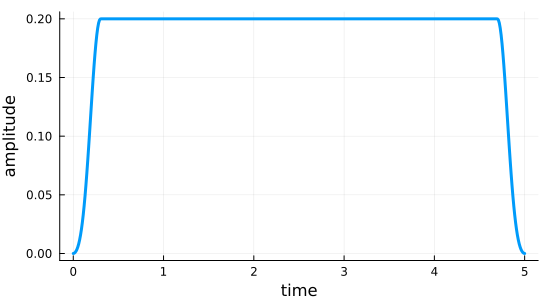

Pulse Parametrization for Krotov's Method
$\gdef\op#1{\hat{#1}}$ $\gdef\init{\text{init}}$ $\gdef\tgt{\text{tgt}}$
This example illustrates the parametrization of control pulses as a form of amplitude constraint.
datadir(names...) = joinpath(@__DIR__, names...);using QuantumControl
using QuantumControl.Shapes: flattop
using QuantumControl.Generators
using QuantumControl.Controls
using QuantumControl.PulseParametrizations:
SquareParametrization,
TanhParametrization,
TanhSqParametrization,
LogisticParametrization,
LogisticSqParametrization,
ParametrizedAmplitude
using QuantumPropagators: ExpProp
using LinearAlgebrausing Plots
Plots.default(
linewidth = 3,
size = (550, 300),
legend = :top,
foreground_color_legend = nothing,
background_color_legend = RGBA(1, 1, 1, 0.8),
)Parametrizations
Symmetric Bounded Controls

Positive (Bounded) Controls
Two-level Hamiltonian
We consider the Hamiltonian $\op{H}_{0} = - \frac{\omega}{2} \op{\sigma}_{z}$, representing a simple qubit with energy level splitting $\omega$ in the basis $\{\ket{0},\ket{1}\}$. The control field $\epsilon(t)$ is assumed to couple via the Hamiltonian $\op{H}_{1}(t) = \epsilon(t) \op{\sigma}_{x}$ to the qubit, i.e., the control field effectively drives transitions between both qubit states.
We we will use
ϵ(t) = 0.2 * flattop(t, T=5, t_rise=0.3, func=:blackman);"""Two-level-system Hamiltonian."""
function tls_hamiltonian(; Ω=1.0, ampl=ϵ)
σ̂_z = ComplexF64[
1 0
0 -1
]
σ̂_x = ComplexF64[
0 1
1 0
]
Ĥ₀ = -0.5 * Ω * σ̂_z
Ĥ₁ = σ̂_x
return hamiltonian(Ĥ₀, (Ĥ₁, ampl))
end;H = tls_hamiltonian();The control field here switches on from zero at $t=0$ to it's maximum amplitude 0.2 within the time period 0.3 (the switch-on shape is half a Blackman pulse). It switches off again in the time period 0.3 before the final time $T=5$). We use a time grid with 500 time steps between 0 and $T$:
tlist = collect(range(0, 5, length=500));function plot_amplitude(ampl, tlist)
plot(tlist, discretize(ampl, tlist), xlabel="time", ylabel="amplitude", legend=false)
end
fig = plot_amplitude(ϵ, tlist)
Optimization target
The Krotov package requires the optimization to be expressed over a set of "trajectories". In this example, there is only a single trajectory: the state-to-state transfer from initial state $\ket{\Psi_{\init}} = \ket{0}$ to the target state $\ket{\Psi_{\tgt}} = \ket{1}$, under the dynamics of the Hamiltonian $\op{H}(t)$:
function ket(label)
result = Dict("0" => Vector{ComplexF64}([1, 0]), "1" => Vector{ComplexF64}([0, 1]),)
return result[string(label)]
end;trajectories = [Trajectory(ket(0), H, target_state=ket(1))]1-element Vector{QuantumControlBase.Trajectory{Vector{ComplexF64}, QuantumPropagators.Generators.Generator{Matrix{ComplexF64}, typeof(Main.var"##225".ϵ)}}}:
Trajectory with 2-element Vector{ComplexF64} initial state, Generator with 2 ops and 1 amplitudes, 2-element Vector{ComplexF64} target stateSquare-parametrization for positive pulses
a = ParametrizedAmplitude(
ϵ,
tlist;
parametrization=SquareParametrization(),
parameterize=true
)ParametrizedAmplitude(::Vector{Float64}; parametrization=SquareParametrization())function plot_amplitude(ampl::ParametrizedAmplitude, tlist)
plot(
tlist,
discretize(Array(ampl), tlist),
xlabel="time",
ylabel="amplitude",
legend=false
)
end
fig = plot_amplitude(a, tlist)
problem = ControlProblem(
trajectories=substitute(trajectories, IdDict(ϵ => a)),
prop_method=ExpProp,
lambda_a=5,
update_shape=(t -> flattop(t, T=5, t_rise=0.3, func=:blackman)),
tlist=tlist,
iter_stop=50,
J_T=QuantumControl.Functionals.J_T_ss,
check_convergence=res -> begin
((res.J_T < 1e-3) && (res.converged = true) && (res.message = "J_T < 10⁻³"))
end
);using Krotov
opt_result_positive = @optimize_or_load(
datadir("parametrization#opt_result_positive.jld2"),
problem;
method=Krotov
); iter. J_T ∫gₐ(t)dt J ΔJ_T ΔJ secs
0 9.51e-01 0.00e+00 9.51e-01 n/a n/a 3.7
[ Info: Set callback to store result in /net/storage/mgoerz/QuantumControlExamples.jl/tutorials/krotov_pulse_parametrization/parametrization#opt_result_positive.jld2 on unexpected exit.
1 9.31e-01 9.29e-03 9.40e-01 -2.05e-02 -1.12e-02 1.7
2 9.01e-01 1.34e-02 9.15e-01 -2.96e-02 -1.63e-02 0.0
3 8.59e-01 1.91e-02 8.78e-01 -4.25e-02 -2.34e-02 0.0
4 7.99e-01 2.67e-02 8.26e-01 -5.96e-02 -3.29e-02 0.0
5 7.20e-01 3.56e-02 7.56e-01 -7.91e-02 -4.35e-02 0.0
6 6.25e-01 4.33e-02 6.68e-01 -9.52e-02 -5.19e-02 0.0
7 5.25e-01 4.62e-02 5.72e-01 -9.96e-02 -5.33e-02 0.0
8 4.36e-01 4.25e-02 4.79e-01 -8.92e-02 -4.66e-02 0.0
9 3.65e-01 3.49e-02 4.00e-01 -7.14e-02 -3.64e-02 0.0
10 3.10e-01 2.74e-02 3.37e-01 -5.48e-02 -2.74e-02 …
37 5.05e-02 8.59e-04 5.13e-02 -1.70e-03 -8.45e-04 0.0
38 4.89e-02 8.05e-04 4.97e-02 -1.60e-03 -7.93e-04 0.0
39 4.74e-02 7.56e-04 4.81e-02 -1.50e-03 -7.45e-04 0.0
40 4.60e-02 7.12e-04 4.67e-02 -1.41e-03 -7.02e-04 0.0
41 4.46e-02 6.71e-04 4.53e-02 -1.33e-03 -6.62e-04 0.0
42 4.34e-02 6.34e-04 4.40e-02 -1.26e-03 -6.26e-04 0.0
43 4.22e-02 5.99e-04 4.28e-02 -1.19e-03 -5.92e-04 0.0
44 4.11e-02 5.68e-04 4.16e-02 -1.13e-03 -5.61e-04 0.0
45 4.00e-02 5.38e-04 4.05e-02 -1.07e-03 -5.32e-04 0.0
46 3.90e-02 5.11e-04 3.95e-02 -1.02e-03 -5.06e-04 0.0
47 3.80e-02 4.86e-04 3.85e-02 -9.67e-04 -4.81e-04 0.0
48 3.71e-02 4.63e-04 3.75e-02 -9.21e-04 -4.58e-04 0.0
49 3.62e-02 4.41e-04 3.66e-02 -8.78e-04 -4.37e-04 0.0
50 3.54e-02 4.21e-04 3.58e-02 -8.38e-04 -4.17e-04 0.0
opt_result_positiveKrotov Optimization Result
--------------------------
- Started at 2024-01-23T22:48:53.606
- Number of trajectories: 1
- Number of iterations: 50
- Value of functional: 3.53585e-02
- Reason for termination: Reached maximum number of iterations
- Ended at 2024-01-23T22:48:59.552 (5 seconds, 946 milliseconds)
We can plot the optimized field:
fig = plot_amplitude(
substitute(a, IdDict(a.control => opt_result_positive.optimized_controls[1])),
tlist
)
Tanh-Square-Parametrization for positive amplitude-constrained pulses
a = ParametrizedAmplitude(
ϵ,
tlist;
parametrization=TanhSqParametrization(3),
parameterize=true
)
problem_tanhsq = ControlProblem(
trajectories=substitute(trajectories, IdDict(ϵ => a)),
prop_method=ExpProp,
lambda_a=10,
update_shape=(t -> flattop(t, T=5, t_rise=0.3, func=:blackman)),
tlist=tlist,
iter_stop=50,
J_T=QuantumControl.Functionals.J_T_ss,
check_convergence=res -> begin
((res.J_T < 1e-3) && (res.converged = true) && (res.message = "J_T < 10⁻³"))
end
);opt_result_tanhsq = @optimize_or_load(
datadir("parametrization#opt_result_tanhsq.jld2"),
problem_tanhsq;
method=Krotov
); iter. J_T ∫gₐ(t)dt J ΔJ_T ΔJ secs
0 9.51e-01 0.00e+00 9.51e-01 n/a n/a 0.1
[ Info: Set callback to store result in /net/storage/mgoerz/QuantumControlExamples.jl/tutorials/krotov_pulse_parametrization/parametrization#opt_result_tanhsq.jld2 on unexpected exit.
1 9.24e-01 1.21e-02 9.36e-01 -2.76e-02 -1.54e-02 0.0
2 8.81e-01 1.90e-02 9.00e-01 -4.32e-02 -2.42e-02 0.0
3 8.15e-01 2.88e-02 8.44e-01 -6.54e-02 -3.65e-02 0.0
4 7.24e-01 4.06e-02 7.65e-01 -9.08e-02 -5.02e-02 0.0
5 6.16e-01 4.99e-02 6.65e-01 -1.09e-01 -5.90e-02 0.0
6 5.08e-01 5.11e-02 5.59e-01 -1.08e-01 -5.66e-02 0.0
7 4.19e-01 4.38e-02 4.62e-01 -8.92e-02 -4.54e-02 0.0
8 3.52e-01 3.37e-02 3.85e-01 -6.69e-02 -3.33e-02 0.0
9 3.02e-01 2.51e-02 3.28e-01 -4.92e-02 -2.41e-02 0.0
10 2.66e-01 1.89e-02 2.84e-01 -3.69e-02 -1.79e-02 …
37 8.06e-02 7.52e-04 8.14e-02 -1.49e-03 -7.37e-04 0.0
38 7.92e-02 7.10e-04 8.00e-02 -1.41e-03 -6.96e-04 0.0
39 7.79e-02 6.72e-04 7.86e-02 -1.33e-03 -6.59e-04 0.0
40 7.67e-02 6.36e-04 7.73e-02 -1.26e-03 -6.24e-04 0.0
41 7.55e-02 6.03e-04 7.61e-02 -1.20e-03 -5.92e-04 0.0
42 7.43e-02 5.73e-04 7.49e-02 -1.14e-03 -5.63e-04 0.0
43 7.32e-02 5.45e-04 7.38e-02 -1.08e-03 -5.35e-04 0.0
44 7.22e-02 5.19e-04 7.27e-02 -1.03e-03 -5.10e-04 0.0
45 7.12e-02 4.95e-04 7.17e-02 -9.81e-04 -4.87e-04 0.0
46 7.03e-02 4.72e-04 7.08e-02 -9.37e-04 -4.65e-04 0.0
47 6.94e-02 4.52e-04 6.98e-02 -8.96e-04 -4.44e-04 0.0
48 6.85e-02 4.32e-04 6.90e-02 -8.57e-04 -4.25e-04 0.0
49 6.77e-02 4.14e-04 6.81e-02 -8.21e-04 -4.07e-04 0.0
50 6.69e-02 3.97e-04 6.73e-02 -7.87e-04 -3.91e-04 0.0
opt_result_tanhsqKrotov Optimization Result
--------------------------
- Started at 2024-01-23T22:49:02.319
- Number of trajectories: 1
- Number of iterations: 50
- Value of functional: 6.69321e-02
- Reason for termination: Reached maximum number of iterations
- Ended at 2024-01-23T22:49:02.878 (559 milliseconds)
We can plot the optimized field:
fig = plot_amplitude(
substitute(a, IdDict(a.control => opt_result_tanhsq.optimized_controls[1])),
tlist
)
Logistic-Square-Parametrization for positive amplitude-constrained pulses
a = ParametrizedAmplitude(
ϵ,
tlist;
parametrization=LogisticSqParametrization(3, k=1.0),
parameterize=true
)
problem_logisticsq = ControlProblem(
trajectories=substitute(trajectories, IdDict(ϵ => a)),
prop_method=ExpProp,
lambda_a=1,
update_shape=(t -> flattop(t, T=5, t_rise=0.3, func=:blackman)),
tlist=tlist,
iter_stop=50,
J_T=QuantumControl.Functionals.J_T_ss,
check_convergence=res -> begin
((res.J_T < 1e-3) && (res.converged = true) && (res.message = "J_T < 10⁻³"))
end
);opt_result_logisticsq = @optimize_or_load(
datadir("parametrization#opt_result_logisticsq.jld2"),
problem_logisticsq;
method=Krotov
); iter. J_T ∫gₐ(t)dt J ΔJ_T ΔJ secs
0 9.51e-01 0.00e+00 9.51e-01 n/a n/a 0.1
[ Info: Set callback to store result in /net/storage/mgoerz/QuantumControlExamples.jl/tutorials/krotov_pulse_parametrization/parametrization#opt_result_logisticsq.jld2 on unexpected exit.
1 8.72e-01 2.97e-02 9.02e-01 -7.91e-02 -4.93e-02 0.0
2 6.93e-01 6.94e-02 7.63e-01 -1.79e-01 -1.10e-01 0.0
3 4.57e-01 1.03e-01 5.60e-01 -2.36e-01 -1.33e-01 0.0
4 3.07e-01 7.51e-02 3.82e-01 -1.50e-01 -7.49e-02 0.0
5 2.31e-01 4.00e-02 2.71e-01 -7.60e-02 -3.60e-02 0.0
6 1.87e-01 2.31e-02 2.10e-01 -4.37e-02 -2.06e-02 0.0
7 1.59e-01 1.48e-02 1.74e-01 -2.82e-02 -1.34e-02 0.0
8 1.39e-01 1.03e-02 1.49e-01 -1.97e-02 -9.38e-03 0.0
9 1.25e-01 7.53e-03 1.32e-01 -1.45e-02 -6.93e-03 0.0
10 1.14e-01 5.74e-03 1.19e-01 -1.11e-02 -5.33e-0…
37 4.98e-02 3.05e-04 5.01e-02 -6.03e-04 -2.99e-04 0.0
38 4.92e-02 2.88e-04 4.95e-02 -5.71e-04 -2.83e-04 0.0
39 4.87e-02 2.74e-04 4.89e-02 -5.42e-04 -2.68e-04 0.0
40 4.81e-02 2.60e-04 4.84e-02 -5.15e-04 -2.55e-04 0.0
41 4.76e-02 2.47e-04 4.79e-02 -4.90e-04 -2.43e-04 0.0
42 4.72e-02 2.35e-04 4.74e-02 -4.66e-04 -2.31e-04 0.0
43 4.67e-02 2.24e-04 4.70e-02 -4.45e-04 -2.20e-04 0.0
44 4.63e-02 2.14e-04 4.65e-02 -4.25e-04 -2.11e-04 0.0
45 4.59e-02 2.05e-04 4.61e-02 -4.06e-04 -2.01e-04 0.0
46 4.55e-02 1.96e-04 4.57e-02 -3.88e-04 -1.93e-04 0.0
47 4.51e-02 1.87e-04 4.53e-02 -3.72e-04 -1.84e-04 0.0
48 4.48e-02 1.80e-04 4.50e-02 -3.57e-04 -1.77e-04 0.0
49 4.44e-02 1.72e-04 4.46e-02 -3.42e-04 -1.70e-04 0.0
50 4.41e-02 1.66e-04 4.43e-02 -3.29e-04 -1.63e-04 0.0
We can plot the optimized field:
fig = plot_amplitude(
substitute(a, IdDict(a.control => opt_result_logisticsq.optimized_controls[1])),
tlist
)Tanh-parametrization for amplitude-constrained pulses
a = ParametrizedAmplitude(
ϵ,
tlist;
parametrization=TanhParametrization(-0.5, 0.5),
parameterize=true
)
problem_tanh = ControlProblem(
trajectories=substitute(trajectories, IdDict(ϵ => a)),
prop_method=ExpProp,
lambda_a=1,
update_shape=(t -> flattop(t, T=5, t_rise=0.3, func=:blackman)),
tlist=tlist,
iter_stop=50,
J_T=QuantumControl.Functionals.J_T_ss,
check_convergence=res -> begin
((res.J_T < 1e-3) && (res.converged = true) && (res.message = "J_T < 10⁻³"))
end
);opt_result_tanh = @optimize_or_load(
datadir("parametrization#opt_result_tanh.jld2"),
problem_tanh;
method=Krotov
); iter. J_T ∫gₐ(t)dt J ΔJ_T ΔJ secs
0 9.51e-01 0.00e+00 9.51e-01 n/a n/a 0.2
[ Info: Set callback to store result in /net/storage/mgoerz/QuantumControlExamples.jl/tutorials/krotov_pulse_parametrization/parametrization#opt_result_tanh.jld2 on unexpected exit.
1 9.27e-01 1.09e-02 9.38e-01 -2.40e-02 -1.31e-02 0.0
2 8.93e-01 1.56e-02 9.09e-01 -3.42e-02 -1.87e-02 0.0
3 8.46e-01 2.18e-02 8.67e-01 -4.77e-02 -2.59e-02 0.0
4 7.82e-01 2.94e-02 8.11e-01 -6.37e-02 -3.43e-02 0.0
5 7.03e-01 3.70e-02 7.40e-01 -7.89e-02 -4.18e-02 0.0
6 6.16e-01 4.18e-02 6.58e-01 -8.68e-02 -4.50e-02 0.0
7 5.33e-01 4.12e-02 5.74e-01 -8.33e-02 -4.21e-02 0.0
8 4.62e-01 3.59e-02 4.98e-01 -7.11e-02 -3.52e-02 0.0
9 4.05e-01 2.89e-02 4.34e-01 -5.66e-02 -2.77e-02 0.0
10 3.61e-01 2.26e-02 3.84e-01 -4.40e-02 -2.14e-02 …
37 1.35e-01 9.69e-04 1.36e-01 -1.92e-03 -9.52e-04 0.0
38 1.33e-01 9.17e-04 1.34e-01 -1.82e-03 -9.02e-04 0.0
39 1.31e-01 8.70e-04 1.32e-01 -1.73e-03 -8.56e-04 0.0
40 1.29e-01 8.26e-04 1.30e-01 -1.64e-03 -8.13e-04 0.0
41 1.28e-01 7.86e-04 1.29e-01 -1.56e-03 -7.74e-04 0.0
42 1.26e-01 7.49e-04 1.27e-01 -1.49e-03 -7.38e-04 0.0
43 1.25e-01 7.14e-04 1.26e-01 -1.42e-03 -7.04e-04 0.0
44 1.24e-01 6.82e-04 1.24e-01 -1.35e-03 -6.73e-04 0.0
45 1.22e-01 6.52e-04 1.23e-01 -1.30e-03 -6.43e-04 0.0
46 1.21e-01 6.24e-04 1.22e-01 -1.24e-03 -6.16e-04 0.0
47 1.20e-01 5.98e-04 1.21e-01 -1.19e-03 -5.91e-04 0.0
48 1.19e-01 5.74e-04 1.19e-01 -1.14e-03 -5.67e-04 0.0
49 1.18e-01 5.51e-04 1.18e-01 -1.10e-03 -5.45e-04 0.0
50 1.17e-01 5.30e-04 1.17e-01 -1.05e-03 -5.24e-04 0.0
fig = plot_amplitude(
substitute(a, IdDict(a.control => opt_result_tanh.optimized_controls[1])),
tlist
)